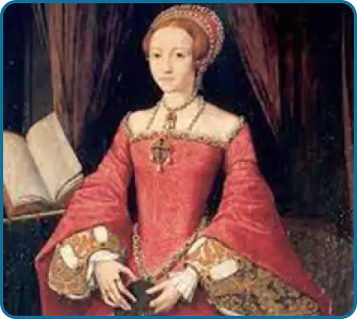
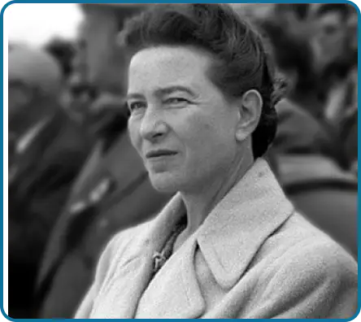
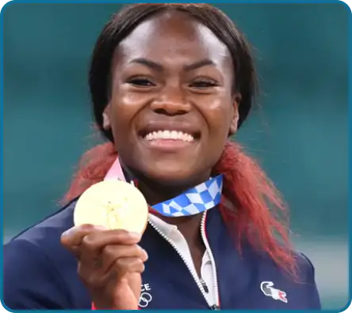
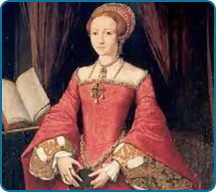
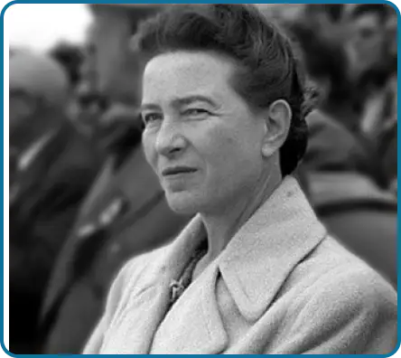
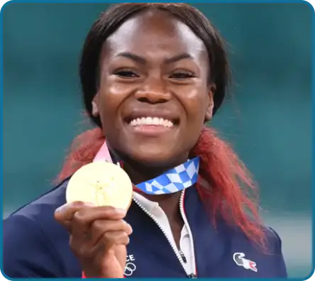
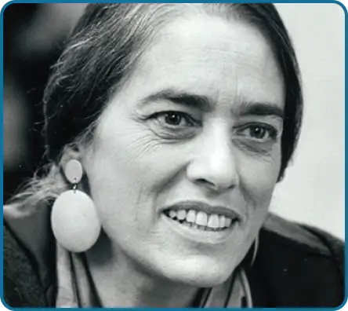
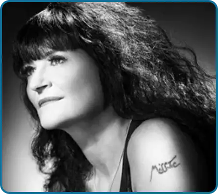
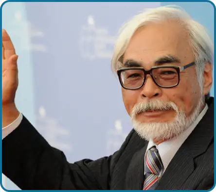
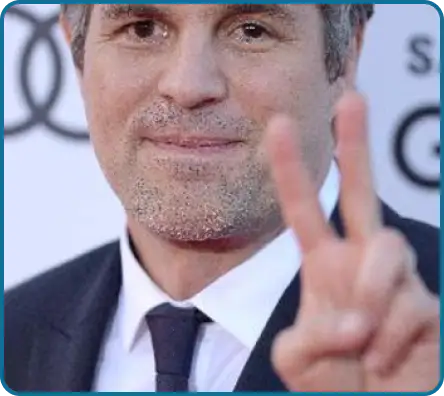

Gallery
Precursors:
Because every movement needs a beginning.
Christine de Pizan

Considered as the first woman writer of the French language who lived from her
pen. Christine de Pizan is not considered
as "Feminist" from a modern point of view, in the sense that she does not wish to upset the societal
system considered
patriarchal.
She wrote in 1405 la cité des dames, considered as one of the first feminist works by its engaged
conception, which
establishes the intelligence of a woman by her education and not by birth.
Olympe de Gouges
.webp)
Emblem of the French feminist movement of which she will be considered as a
pioneer.
Olympe de Gouges is the author of the declaration of the rights of the woman and the citizen in
which she affirmed the
equality of the civil and political rights of both sexes. She devoted many works to the emancipation
of women from their
husbands, including the play Necessity of Divorce, in which she asked for the introduction of
divorce.
She went to the scaffold with courage and dignity, convinced of her ideas and the advances she
proposed. Before her
execution she declared to the crowd: "Children of the Fatherland you will avenge my death".
She died on November 3, 1793 at the age of 45.
Elizabeth Cady Stanton
.webp)
The daughter of a judge father, Elizabeth saw early on in his office that the law
favored men over women.
That married women had no income of their own, no property rights, and no right of custody over
their own children.
Exhausted by her nation's indifference to gender inequality, she organized the first women's rights
convention in the
United States in 1848 (the Seneca Falls Convention), making her the leader of the first feminist
wave in the United
States.
Simone de Beauvoir

A woman of letters from a good Parisian family, Simone de Beauvoir distinguished
herself through her committed writings
such as "Le deuxieme sexe" (1949), making her the figurehead of the second feminist wave, with a
report on the
inferiority of women in society and avenues of reflection through new angles such as anatomy,
religion or historical
myths.
She died in 1986 at the age of 78.
The sportswomen:
Because the progress of ideas also passes by the physical overcoming.
Megan Rapinoe
.webp)
Co-captain and World Champion Megan Rapinoe is not afraid to make a name for
herself by taking strong and
well-established positions such as denouncing police violence against black people, the treatment of
minorities by
former President Trump or her contribution to the feminist movement by pointing out the difference
in salaries between
male and female players.
Clarisse Agbegnenou:

Deep humanist and great fighter, Clarisse knows that in sport as in society one
does not evolve without having the rage
to win and without committing herself personally in her fights. In 2019 she took on the
responsibility of becoming the
godmother of the association SOS Préma, whose goal is to help children born prematurely to have a
better chance of
growing up properly. In the same year she took the same responsibility in the feminist operation
"Women's Sport" whose
goal is to improve the media coverage of women's sports.
Stéphane Pallez
.webp)
CEO of La Française des Jeux since 2014, Stéphane Pallez also intends to contribute to reducing
inequalities in sports
through her company.
To do this, FDJ has been implementing the "Sport for Women" program since 2016, based on several
pillars: encouraging
women to practice sports, providing financial support to professional sportswomen, participating in
the media coverage
of women's sports, and finally, mobilizing the FDJ network to allow women to access the major sports
body.
Scientists and engineers:
Christine de Pizan
Considered as the first woman writer of the French language who lived from her pen. Christine de Pizan is not considered as "Feminist" from a modern point of view, in the sense that she does not wish to upset the societal system considered patriarchal. She wrote in 1405 la cité des dames, considered as one of the first feminist works by its engaged conception, which establishes the intelligence of a woman by her education and not by birth.
Olympe de Gouges
Emblem of the French feminist movement of which she will be considered as a pioneer. Olympe de Gouges is the author of the declaration of the rights of the woman and the citizen in which she affirmed the equality of the civil and political rights of both sexes. She devoted many works to the emancipation of women from their husbands, including the play Necessity of Divorce, in which she asked for the introduction of divorce. She went to the scaffold with courage and dignity, convinced of her ideas and the advances she proposed. Before her execution she declared to the crowd: "Children of the Fatherland you will avenge my death". She died on November 3, 1793 at the age of 45.
Elizabeth Cady Stanton
The daughter of a judge father, Elizabeth saw early on in his office that the law favored men over women. That married women had no income of their own, no property rights, and no right of custody over their own children. Exhausted by her nation's indifference to gender inequality, she organized the first women's rights convention in the United States in 1848 (the Seneca Falls Convention), making her the leader of the first feminist wave in the United States.
Simone de Beauvoir
A woman of letters from a good Parisian family, Simone de Beauvoir distinguished herself through her committed writings such as "Le deuxieme sexe" (1949), making her the figurehead of the second feminist wave, with a report on the inferiority of women in society and avenues of reflection through new angles such as anatomy, religion or historical myths. She died in 1986 at the age of 78.
The sportswomen:
Because the progress of ideas also passes by the physical overcoming.
Megan Rapinoe
Co-captain and World Champion Megan Rapinoe is not afraid to make a name for herself by taking strong and well-established positions such as denouncing police violence against black people, the treatment of minorities by former President Trump or her contribution to the feminist movement by pointing out the difference in salaries between male and female players.
Clarisse Agbegnenou:
Deep humanist and great fighter, Clarisse knows that in sport as in society one does not evolve without having the rage to win and without committing herself personally in her fights. In 2019 she took on the responsibility of becoming the godmother of the association SOS Préma, whose goal is to help children born prematurely to have a better chance of growing up properly. In the same year she took the same responsibility in the feminist operation "Women's Sport" whose goal is to improve the media coverage of women's sports.
Stéphane Pallez
CEO of La Française des Jeux since 2014, Stéphane Pallez also intends to contribute to reducing inequalities in sports through her company. To do this, FDJ has been implementing the "Sport for Women" program since 2016, based on several pillars: encouraging women to practice sports, providing financial support to professional sportswomen, participating in the media coverage of women's sports, and finally, mobilizing the FDJ network to allow women to access the major sports body.
Scientists and engineers:
Without whom the world would not be as advanced.
Marie Curie
.webp)
Passionate about science and research, and endowed with an unfailing determination, Marie Curie did not let an exclusively male environment prevent her from advancing in her discoveries. At the university, there were only 23 women for 4000 students but this only motivated her to become a master in this field, as proof she was the first woman to have received the Nobel Prize and, to date, the only woman to have received two. She remains the only person to have been awarded in two distinct scientific fields: physics in 1903, and chemistry in 1911. Her discoveries in the field of radiation and her medical contribution during the Great War made Marie Curie an illustrious heroine of the 20th century. She died in 1934, sick of her discoveries but liberated from her condition as a woman.
Evelyn Fox Keller:
Professor of the history and philosophy of science at MIT. Evelyn gives a theoretical view of the consequences of society on the scientific world. In 1985, she published "Reflections on Gender and Science". Her most important contribution is in the field of "science and gender", where she relates through her own experience as a woman the subject of gender in an almost exclusively male universe.
Ada Lovelace:
.webp)
Since her childhood, Ada has used her overflowing imagination to design many futuristic machines. Passionate about the mysterious and complex world of mathematics, she was convinced that this was the way to build the future. But in 1820, girls were not encouraged to take physics, mathematics or engineering courses because they were not considered intelligent enough. But Ada did not let the prejudices of her time taint her passion. As an adult with a specialized education in mathematics, she became the first person to create a computer program while working on Charles Babbage's analytical machine. She died young, in pain and forgotten by history, but with the serenity of having achieved her dreams.
Valentina Terechkova :
.webp)
Parachutist of excellence and convinced communist, the Russian Valentina Terechkova becomes for the glory of the Soviet Union the first woman to realize a flight in space on June 16, 1963. Alone on board her spacecraft. The results of the mission were rather negative, but for her courage she was rewarded with the two highest awards of the country: the title of Hero of the Soviet Union and the Order of Lenin. She will become a symbol of equality between men and women in the eyes of the world by giving no less than 43 conferences abroad and by becoming the representative of the Soviet Union at the International Women's Year in 1975. She will remain the proof that with determination and courage women can also reach the stars.
Artists:
Because art is also an excellent means of denunciation.
Carolee Schneemann:
Multidisciplinary artist since the 60s. Carolee Schneemann uses painting, photography, film and performance to challenge the archaic view of the female body, as well as the taboos of sexuality in society. She knows all too well that the art world is dominated by male codes. "You are a fabulous kid, you could go very far, but don't take art too much to heart, you are only a girl". Such were the words of his teacher when he understood the ambitions that nourished his student. But Carolee is insistent and will never let the world she adores exclude her for the sex she carries. She will even go as far as to provoke it by using the female body as a tool of art. She died on March 6, 2019 at 79 years, recognized and rewarded by her convictions and her works.
Miss Tic
Since 1985, Miss tic is THE feminine and feminist figure of French street art. She uses Parisian neighborhoods as frescoes to represent women at their strongest. A pride, a freedom and a power that she likes to retranscribe through her personal stories. Now 65 years old, Miss tic is still practicing and is even solicited by cities to design urban environments such as the 5th line of tramway in Montpellier in 2017
AIKO
.webp)
Based in New York City where she has lived and worked since the mid-90s, AIKO is a Japanese street art artist who quickly made a name for herself in the male-dominated world of street art. By collaborating with titans of modern art such as the FAILE collective or Banksy, AIKO has built a reputation far beyond the gates of New York, by putting forward glamorous, powerful and uninhibited women. Helped by the greatest, it is above all thanks to its particular graphic style of mix between American culture and Japanese inspiration, all pronouncing current feminist convictions that AIKO will become an internationally known figure.
Men:
Because an equality is never defined alone.
Hayao Miyazaki:
In the middle of his zany, poetic and colorful universe. Hayao Miyazaki, the co-founder of Studio Ghibli, to whom we owe, among others, "My Neighbors Totoro" and "Princess Mononoke", to name but a few, also uses his films as a medium to convey current social issues that are important to him, such as ecology and feminism. Studio Ghibli distinguishes itself from other animation studios by the importance it gives to the female character in many of its films. Moreover, it has gone so far as to encourage the hiring of women at the studio while ensuring their professional advancement.
Kurt Cobain
.webp)
From an early age, the legendary guitarist managed to make friends almost exclusively with girls, which would instill in him for the rest of his short life values of respect and special consideration for them. But beyond simple personal values, he will use his music and their media interest to share and educate his audience in the fights that are important to him such as: feminism, harassment, rape and the homosexual cause. He and his wife Courtney Love will even go so far as to give several charity concerts in support of victims of domestic violence, for many young people of the 90's' he and his band will become a cry of revolt and a demand for progress for equality and acceptance. He will join the club of the 27 on April 5, 1994 following a suicide.
Mark Ruffalo
For some years now, the actor of Hulk in the cinema, is part of the great voices that dare to denounce the sexism and machismo present in Hollywood and claim to be fully feminist. He admits to regretting the lack of place of women in the cinema and is saddened by the characters that are given to them (often secondary, useless or poorly written for lack of interest). To defend the right to abortion, threatened in many U.S. states, Mark Ruffalo published on the net a very personal and committed letter, in which he recalled that abortion is a right granted in the U.S. Constitution.